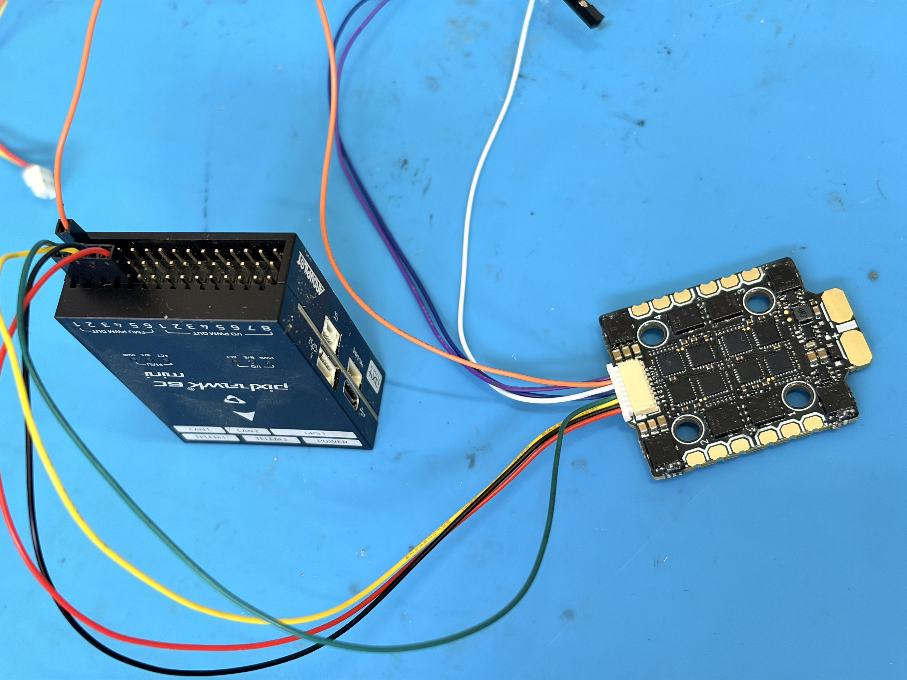
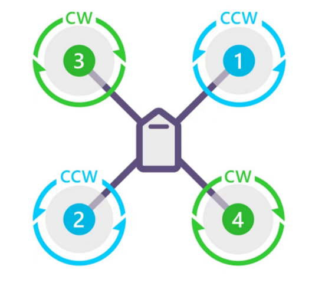

电调到飞控信号
本页说明 F60 MINI 4IN1 V2 电调到 PIX6C MINI 飞控的控制信号线。按当前方案，电调接 PIX6C MINI 的 FMU PWM OUT / AUX OUT，协议后续使用 DShot600。
不要接错输出口
接 FMU PWM OUT / AUX OUT，不是 I/O PWM OUT / MAIN OUT。电调信号线只需要信号和地线，不需要把电调的 V 接到飞控的 + / VDD_SERVO。
接线步骤
- 从 F60 MINI 4IN1 V2 的 8pin SH1.0 线中保留
ESC1、ESC2、ESC3、ESC4、GND五根线。 - 将
ESC1、ESC2、ESC3、ESC4分别接到 PIX6C MINI FMU PWM OUT / AUX OUT 的FMU_CH1、FMU_CH2、FMU_CH3、FMU_CH4信号位。 - 将电调
GND接到 FMU PWM OUT 的- / GND。 T、C、V三根线不接飞控，单独绝缘。- 接完后只做通电和 QGC 电机点动验证，不安装桨叶。

线序说明
F60 MINI 4IN1 V2 的 8pin SH1.0 端口按说明使用如下顺序：
4 3 2 1 T C G V
| 电调端口 | 含义 | 本教程处理 |
|---|---|---|
| 1 | ESC1 / M1 信号 | 接 FMU_CH1 的 S |
| 2 | ESC2 / M2 信号 | 接 FMU_CH2 的 S |
| 3 | ESC3 / M3 信号 | 接 FMU_CH3 的 S |
| 4 | ESC4 / M4 信号 | 接 FMU_CH4 的 S |
| T | Telemetry，电调遥测 | 暂不接，单独绝缘 |
| C | Current，电流检测 | 暂不接，单独绝缘 |
| G | GND，信号地 | 接 FMU PWM OUT 的 - / GND |
| V | 电压 / 电源相关线 | 暂不接，单独绝缘 |
因此 SH1.0 转杜邦线只保留五根实际接入飞控：
ESC1、ESC2、ESC3、ESC4、GND
T、C、V 三根线不要插入飞控，建议热缩管或绝缘胶带单独处理。
接飞控 FMU PWM OUT 说明
PIX6C MINI 的 FMU PWM OUT / AUX OUT 三行按说明理解为：
S：FMU_CH1~6 信号行。+：VDD_SERVO，不接电调 V。-：GND，接电调 G。
| F60 电调线 | PIX6C MINI FMU PWM OUT |
|---|---|
| ESC1 / 1 | FMU_CH1 的 S |
| ESC2 / 2 | FMU_CH2 的 S |
| ESC3 / 3 | FMU_CH3 的 S |
| ESC4 / 4 | FMU_CH4 的 S |
| G | FMU PWM OUT 的 - / GND |
| T / C / V | 不接 |
电机编号原则
后续飞控调试中的电机测试应按 PX4 电机顺序核对：

机头
↑
3 / CW 1 / CCW
左前 右前
2 / CCW 4 / CW
左后 右后
| PX4 Motor ID | 位置 | 期望转向 |
|---|---|---|
| Motor 1 | 右前 | CCW |
| Motor 2 | 左后 | CCW |
| Motor 3 | 左前 | CW |
| Motor 4 | 右后 | CW |
本机电机为倒置安装时，仍应统一按“从机体上方俯视”的方向去对照标准图；不要把从机体下方仰视看到的方向直接当成 PX4 方向。倒置安装通常影响桨叶正反和安装面，不改变 PX4 的 Motor ID 对应关系。
如果电调安装方向或电机焊接位置导致物理电机编号不同，应先确认电机焊在哪个电调铜板编号，再把对应 ESC 信号线接到飞控定义的 Motor ID 通道。
后续验证
完成接线后，进入 电机测试与反转 页面，用 QGC 点动 Motor 1~4。若编号不对先调整 ESC1~ESC4 信号线；若编号正确但转向错误，优先使用 DShot 命令反转，最后才交换电机三相线。